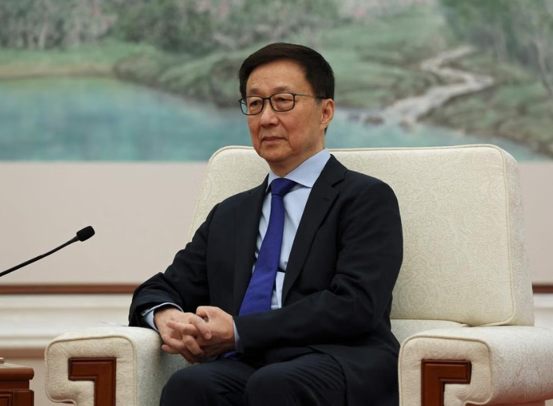

国际快讯
2025 年 1 月 18 日
中国派出副主席韩正出席特朗普就职典礼
本文信息来源于 联合早报 有删改
中国国家副主席韩正将出席1月20日在华盛顿举行的美国总统特朗普就职典礼。北京分析人士指出，韩正参加特朗普就职典礼，意在展示中国高层对特朗普新政府的友善姿态，并希望与特朗普本人及其政府建立正常沟通渠道，减轻中美关系可能因特朗普重返白宫而面临的冲击。
中国国家副主席韩正
中国外交部官网星期五（1月17日）发布声明说，应美方邀请，国家主席习近平特别代表、国家副主席韩正将赴美国首都华盛顿出席于1月20日举行的特朗普总统就职典礼。
声明还称，中方始终按照相互尊重、和平共处、合作共赢的原则看待和发展中美关系。“我们愿同美新政府加强对话沟通，妥善管控分歧，拓展互利合作，共同推动中美关系稳定、健康、可持续发展，走出一条新时期中美正确相处之道”。